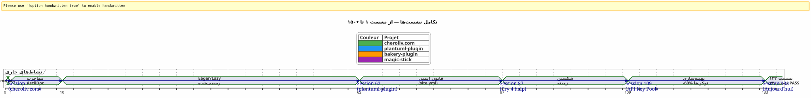
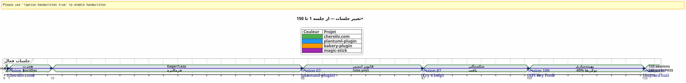
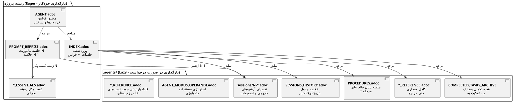
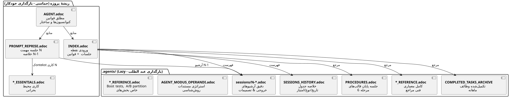

مدیریت یک عامل هوش مصنوعی با AsciiDoc: استراتژی Eager/Lazy من برای جلسات Opencode بدون نشت بافت (Context Leak)
منتشر شده در 24 April 2026
خلاصه
وقتی که با یک عامل هوش مصنوعی مثل Opencode در پروژههای پیچیده در چندین جلسه کار میکنیم، با یک مشکل اساسی روبرو میشویم:پخش زمینه. عامل جلسه قبلی را به یاد ندارد. همه چیز که به او توضیح داده شد — معماری، کنوانسیونها، وضعیت backlog — از دست رفته است. بازسازی این context در هر جلسه هزینهبر، کند و منبع خطاست.
این مقاله استراتژی دستساز که برای حل این مشکل ساختهام را نشان میدهد: یک sistemi حاکمیت پایدار مبتنی بر فایلهای AsciiDoc، همراه با یک دوگانهعازم/کسلبرای بهینهسازی مصرف توکن زمینه، و یکروش اجباری پایان جلسهبرای اطمینان از ادامه.
صحنه: دوشنبه ۲۱ آوریل، ۹:۰۰
من Opencode را دوباره باز میکنم تا پلاگین Gradle خودم را ادامه دهم.plantuml-plugin. دیروز شب، من سه ساعت را برای گفتگو با عامل معماری پول کلید API — چرخش راند رابن، مدیریت سهمیه، جایگزینی خودکار صرف کردم. امروز صبح، عامل به من نگاه میکند چشمهای مثل ماهی طلایی.
_ سلام، من کمککن Opencode هستم. امروز چطور میتوانم به شما کمک کنم؟ _
نه — بله, مجموعه کلیدهای API, ما در ساختار YAML بودیم. نه — مراقب,PlantumlManager est un objet Kotlin singleton, pas une classe. Pas de — Non, on a décidé hier que SyntaxValidationResult`یک کلاس sealed تودرتو در`PlantumlService.
همه چیز باید دوباره انجام شود. یا بهتر بگویم: همه چیز باید دوباره توضیح داده شود. بیست دقیقه اول جلسهام را صرف بازسازی زمینهای میکنم کهfactor دیروز آن را در دست داشته. بیست دقیقه توکنهای سوخته. بیست دقیقهای که میتوانستم کد بنویسم اما مجبور به تدریس الزامی میشوم.
این یک باگ Opencode نیست. این طبیعت ذاتی LLMهای محاورهای است: بین دو جلسه، حافظه کاری استکاملاً محو شده. عامل به یاد ندارد که مأموریت قبلی چه بود، چه تصمیماتی گرفته شده بود، چه pieg‑هایی شناسایی شده بود، چه کدی که با هم نوشتیم.
من این را دهها بار تجربه کردم. در چهار پروژه همزمان. با جلساتی که بهصورت متمرکز به دنبال یکدیگر میآیند به طول هفتهها. من محاسبه کردم: به طور متوسط,30 تا 40 % زمان جلسهمخصص به بازبینی/بازیابی/Contextualize العامل بود. در جلسه ۸۷ پروژه`plantuml-plugin`, من سر کشیدم. من دیگر نمیتوانستم هزینه توضیح دادن دوباره را برای دفعه دهم بپردازم که`AttemptEntry`است یک donnée کلاس سطح-بالا در
Oops, I accidentally wrote "donnée" (French). Need Persian. Let’s correct: " است یک داده کلاس سطح-بالا در". Yes. Ensure no extra characters. Output exactly.
</think>
است یک داده کلاس سطح-بالا در`DiagramProcessor.kt`.
من به یک سیستم نیاز داشتم. نه یک هک. یک حکومت واقعی.
پیدایش: از آشفتگی به روش
جلسات اولیه: عصر تاریکی
پروژهی اول من با Opencode,plantuml-plugin, آغاز شد بدون هیچگونه مدیریت. من یک سؤال میپرسم، عامل پاسخ میدهد، آن را تکرار میکنیم، جلسه تمام میشود و فردا از صفر شروع میکنیم. این جلسه 1 بود، سپس 2، سپس 3… تا جلسه 62 که متوجه شدم ساعتهای زیادی را به توضیح دوباره همان معماری هدر دادهام.
در جلسه ۶۲، اعداد موجود هستند :198 تست واحدی عبور میکنند, 42 تستهای عملکردی تأیید شده, پلاگین کار میکند. اما هزینه شناختی غیرقابل تحمل است. هر جلسه جدید با یک مونولوگ بیست دقیقهای در مورد ساختار پروژه آغاز میشود.
بخش site.yml حذف شد (Session 2, bakery-plugin)
روش نیز از یک آسفت به وجود میآید. در مورد پروژه`bakery-gradle`, در جلسه ۲، من از کارمند میخواهم فایل را تغییر دهم`site.yml`. العامل، بدون بررسی اینکه آیا فایل نسخهبندی شده است، یک`Write`که محتوا را بازنویسی میکند. نتیجه: توکنهای واقعی (کلیدهای API Firebase، رازهای استقرار) با مکانهای marcador fictitious جایگزین میشوند. فایل در گیت نبود — آن در`.gitignore`برای محافظت از اسرار.
بدون بکآپ. بدون`git restore`ممکن. من گیر کردم. من باید به صورت دستی فایل پیکربندی را بازسازی کنم، توکنها را در مدیران کلمه عبور من یابم، همه را بچسبانم.
این است که la از این تناوری به وجود میآیدقانون مطلق 1b:
_ هرگز कुचل نکنیدیک فایل config با یک`Write`کامل وقتی یک`Edit`یک بخش کافی است.هرگز جایگزین نکنمقادیر حساسی را با مقادیر جعلی.بررسی git check-ignore و `git ls-filesقبل از هرگونه تغییر. _
این قانون امروز در سنگ تمام فایلهای من حک شده است.AGENT.adoc et `INDEX.adoc`از بین چهار پروژه، ناشی از یک خطای واقعی بود که یک ساعت کار دستی به من هزینه داد.
مهاجرت Markdown → AsciiDoc (Session 1, cheroliv.com)
۲۵ آوریل ۲۰۲۶، روی`cheroliv.com`, من یک تصمیم اساسي میگیرم: تمام حاکمیت Markdown را به AsciiDoc تبدیل میکنم. این زیبا نیست. این کارآمد است. AsciiDoc یک ساختار معنایی ارائه میدهد که LLMها آن را بهتر میخوانند: بخشهای هیرارکشی، جداول نوعدار، هشدارها (NOTE, WARNING, CAUTION), ویژگیهای اسناد قابلخواندن توسط ماشین

-
تبدیل از`AGENTS.md` en
AGENT.adoc -
ایجاد عوامل تخصصی :`CODER.adoc`,
SCRUM_MASTER.adoc,PLANTUML_DESIGNER.adoc -
ایجاد ساختار Eager/Lazy :`INDEX.adoc`,
SESSIONS_HISTORY.adoc,AGENT_SESSION_MANAGER.adoc,SESSION_CHECKLIST.adoc,PROCEDURES.adoc
یک کامیت:`90975e9 refactor: migrate agent governance from Markdown to AsciiDoc`. و سایت همچنان کار میکند

بالای timeline پیشرفت واقعی را نشان میدهد. نقطه تحول session 87 : جایی که ناراحتی از باز-contextualization تکراری آستانه تحمل را فراتر میرود و روش Eager/Lazy دیگر صرفاً یک ایده نیست و تبدیل به یک الزام شده.
استراتژی: Eager/Lazy به عمق
فلسفه : کش اطلاعاتی بهدستآمده به شناخت
رویکرد من بهطور مستقیم از مدیریت حافظه نهال کامپیوتری الهام میگیرد. هر چیزی کهضروری و بهصورت مکرر استفاده میشودباید بلافاصله قابل دسترس باشدعلاقهمند). همه چیز که استزمینهای یا حجمیباید در صورت نیاز بارگذاری شود (سست).

فایلهای ایگر : داشبورد
این فایلها در ریشه هر پروژه زندگی میکنند و خودکاراً توسط عامل در ابتدای هر جلسه بارگذاری میشوند. آنها تشکیل میدهندداشبورد-- اطلاعات بحرانی، بلافاصله قابل دسترسی.

AGENT.adoc-- فایل اصلی. بر`cheroliv.com`، آن 200 خط است و شامل :
-
قوانین مطلق پروژه (بدون اجازه commit، بدون`rm`بدون تایید)
-
ساختار پروژه و استانداردهای کد
-
دستورات ضروری (
./gradlew serve,./gradlew test) -
آپیکها و بکلگ محصول (استوریهای کاربر اولویتبندیشده)
-
معیارهای کیفیت متعامِل (دسترسی، واکنشگرایی، سازگاری)
روی`bakery-plugin`, قاعده 0 متفاوت است :./gradlew -q publishToMavenLocal` الزامی پس از هر تغییر در کد منبع. چون آزمایش پلاگین بدون بازنشر JAR محلی یک ساعت از من صرف کرد تا یک کد که هنوز بستهبندی نشده بود را دیباگ کنم.
PROMPT_REPRISE.adoc-- مهمت جلسه جاری. بهروزرسانی در پایان هر جلسه، شامل است:
-
شماره جلسه و ماموریت اولویت
-
خلاصه جلسه قبلی (چه کاری انجام شده، چه کاری باقی مانده)
-
معايير پذیرش جلسه فعلی
-
یادآورهای تخصصی فنی
.agents/INDEX.adoc-- نقطه ورود. این قوانین قطعی، جلسات اخیر و بهویژه را خلاصه میکندپرتفلو پروژههامدیریت شده با همان روش. تا به امروز، پنج پروژه در آن ثبت شدهاند:
----
----
----
----
| magic-stick | Session 23 | SCRIPT_VERIFICATION.adoc | 2026-04-27 |
| bakery-gradle | Session 11 | TEST_COVERAGE_ANALYSIS | 2026-04-27 |
| cheroliv.com | Session 9 | TEST_COVERAGE_ANALYSIS | 2026-04-27 |
| plantuml-gradle| Session 133| TEST_COVERAGE_ANALYSIS | 2026-04-23 |
| jhipster-gradle-plugins | Session 1 | TEST_COVERAGE_ANALYSIS | 2026-04-28 |
----
**`*_ESSENTIALS.adoc`** -- یک افزودن تازه (جلسه 109، افزونه plantuml-plugin) برای بهینهسازی بیشتر زمینه Eager. به جای بارگذاری 200 خط از زمینه کاری بر روی havuz کلید API، من 50 خط از جوهر را بارگذاری میکنم، و 150 خط دیگر در حالت LAZY داخل`*_REFERENCE.adoc`.
نتیجهٔ اندازهگیری شده : عبور از**~25k توکن EAGER به ~10k توکن**(سود 60%). عامل دیگر به یادآوریهای پرانرژی نیاز ندارد.
==== لینک گمشده : `opencode.json
باید به شما بگویم یک چیزی که تقریباً فراموش کردم اسناد کنم. در بالای تمام این فایلهای `.adoc`، یک فایل JSON کوچک وجود دارد که بدون آن هیچچیز کار نمیکند. اسمش`opencode.json`و آن شش خط است. به حرفی، شش خط.
[source,json]
----
{
"$schema": "https://opencode.ai/config.json",
"instructions": [
"AGENT.adoc"
]
}
----
این فایل به Opencode میگوید: « هنگام شروع، بارگذاری `AGENT.adoc`خودکارانه. » بدون او، عامل یک صفحه سفید دقیقاً همانند چیزی که من در ابتدای مقاله توصیف کردم. با او، عامل قبلاً در دستش دارد قوانین قطعی، معماری پروژه و دستورات ضروری — حتی قبل از اینکه من سلام بگویم.
من تصادفی اهمیت این فایل را کشف کردم. روی`bakery-plugin`, آن وجود نداشت. من میپرسیدم چرا عامل بهطور منظم در این پروژه « گمشده » بیشتر از دیگر پروژهها بود. قوانین مطلقاً به خوبی در`AGENT.adoc`— اما`AGENT.adoc`به هرگز بارگذاری نشده بود. عامل تنها همان چیزی را که من به او میگفتم بخواند، بهصورت دستی، در هر جلسه میخواند. این جلسه ۱۱ بود از`bakery-plugin`وقتی متوجه شدم عدم وجود`opencode.json`. من آن را ایجاد کردم — و جلسه 12 همانند سایر جلسات آغاز شد.
این فایل برایم الآن اینقدر واضح شده که دیگر اصلاً به آن فکر نمیکردم. یک اشتباه کلاسیک برای توسعهدهندهای که ابزارش را خیلی خوب میشناسد. امروز من آن را بهطور منظم *قبل* میسازم`AGENT.adoc`. این اولین سنگ است.
==== دوالیت `INDEX.adoc
یک ظریف دیگر که باید صریح شود:`INDEX.adoc`زندگی میکند در`.agents/`— یک فایل که من آن را بهعنوان LAZY ارائه دادم. اما من آن را در تمام جدولهایم بهعنوان EAGER فهرست میکنم. اینجا یک تنش واضح وجود دارد.
واقعیت الميدان: پروندهها`.agents/INDEX.adoc`بهصورت خودکار در ابتدای جلسه به خوبی بارگذاری میشوند، به همان ترتیب که`AGENT.adoc` et `PROMPT_REPRISE.adoc`. آنها در`.agents/`به دلایل سازماندهی — نه ریشه را اشغال نکنیم — اما رفتار آنها EAGER است.
روی`plantuml-plugin`, `INDEX.adoc`شامل ۲۰۰ خط است و حاوی قوانین مطلق *کامل* با تاریخچهٔ آن (دروس جلسات گذشته) است، EPICs با امتیازات و portfolio پروژهها. این اسناد است که عامل آن را برای درک «کجا هستیم» معاینه میکند. بر`bakery-plugin`, او 150 خط با نقشه مسیر و جلسات اخیر مینویسد.
تکرار عمدی بین`AGENT.adoc` et `INDEX.adoc`ممکن است شگفتانگیز باشد. قوانین مطلق در هر دو حضور دارند. چرا؟ چون آنها دو نقش مختلف را بر عهده دارند: در`AGENT.adoc`, آنها *توضیحی* هستند (داستانگویی از قانون، درس آموخته) ; در`INDEX.adoc`, آنها *اجراپذیر* (قانون صریح، بدون توجیه، برای مشورت سریع). نماینده میخواند`AGENT.adoc`یک بار برای *comprendre* ; او دوباره میخواند`INDEX.adoc`در هر جلسه برای *اعمال*. دو کاربرد، دو فرمت.
[plantuml, format=svg, id=diag-dualite-agent-index, alt="Comparaison entre AGENT.adoc (narratif) et INDEX.adoc (exécutif)"]
----
@startuml
skinparam backgroundColor #FEFEFE
skinparam defaultTextAlignment center
title دوانگی AGENT.adoc ←→ INDEX.adoc
left to right direction
rectangle "AGENT.adoc\n(ریشه — EAGER)" as AGENT #E3F2FD {
rectangle "📖 **فرمت روایی**\nروایت کردن قانون\nدرس آموخته، بستر" as NARR
rectangle "🏗️ **معماری کامل**\nساختار پروژه، اجزاء\nبکلاگ مفصل US" as ARCHI
rectangle "📋 **قوانین توضیحی**\nچرا این قانون وجود دارد\nتاریخچه حادثه" as EXPL
}
rectangle "INDEX.adoc\n(.agents/ — EAGER)" as INDEX #E8F5E9 {
rectangle "⚡ **فرمت اجرایی**\nقاعده بیپوشش، بدون توجیه\nمشاوره سریع" as EXEC
rectangle "📊 **نقشه راه & EPICs**\nجدول خلاصه\nپیشرفت، امتیاز، اولویت" as ROAD
rectangle "**پورتفوی پروژهها**\nدید افقی\n5 پروژه همگامسازیشده" as PORT
}
AGENT --> INDEX : "عامل AGENT.adoc را میخواند\nیک بار تا **comprendre**"
INDEX --> AGENT : "عامل فایل INDEX.adoc را دوباره خواند\nهر جلسه برای **اعمال**"
note bottom of AGENT
Taille max : 200 lignes
end note
note bottom of INDEX
Taille max : 200 lignes
Source de vérité en cas de divergence
end note
@enduml
----
این redundantitu که بهعنوان یک گزینش طراحی است، حدود ۵۰ خط توکن EAGER اضافی مصرف میکند — اما تضمین میکند که عامل همیشه قواعد را در پیش روی خود داشته باشد، حتی در فرم خلاصهای که اطاعت فوری را تسهیل میکند.
=== فایلهای LAZY: راهنمای مالک
این فایلها در`.agents/`و فقط وقتی که عامل به آنها نیاز دارد، خوانده میشوند. آنها واقعیترین ثروت روش را تشکیل میدهند، زیرا دانش پروژه را جمعآوری میکنند بدون/context فعلی را آلوده نکنند.
[plantuml, format=svg, id=diag-agents-tree, alt="Arborescence complète du dossier .agents/"]
----
@startuml
skinparam folderBackgroundColor #E3F2FD
skinparam folderBorderColor #1565C0
skinparam fileBackgroundColor #FFF3E0
skinparam fileBorderColor #EF6C00
folder ".agents/" as ROOT {
file "INDEX.adoc\n(EAGER -- 200 خط)" as IDX #E8F5E9
file "AGENT_SESSION_MANAGER.adoc\n(جلسه الگو)" as ASM
file "SESSION_CHECKLIST.adoc\n(زمان تغییر)" as CHK
file "PROCEDURES.adoc\n(6 مراحل + LAZY/EAGER)" as PRO
file "SESSIONS_HISTORY.adoc\n(همه جلسات)" as HIS
folder "جلسات/" as SESS {
file "1-chore-migration.adoc" as S1
file "109-فرمسازی-سست.adoc" as S109 #FFECB3
file "133-epic11-مقاله.adoc" as S133
file "... +130 دیگر" as SMORE
}
folder "بایگانیها/" as ARCH {
file "COMPLETED_TASKS_2026-04.adoc" as CTA
file "SESSIONS_HISTORY_83-95.adoc" as SHIST
folder "خلاصههای جلسات/" as SUM {
file "SESSION_64_SUMMARY.adoc" as SU64
file "SESSION_73_SUMMARY.adoc" as SU73
file "..." as SUMORE
}
folder "prompts_archive/" as PARCH {
file "PROMPT_REPRISE_S65.adoc" as PR65
file "PROMPT_REPRISE_S75.adoc" as PR75
file "..." as PMORE
}
}
}
IDX --> SESS : "فهرست"
IDX --> HIS : "فهرست"
IDX --> ARCH : "مرجع"
note right of S109
Session 109 =
Formalisation stratégie
LAZY/EAGER
Token : ~25k → ~10k
end note
@enduml
----
ساختار واقعی پوشه را درخت بالا نشان میدهد`.agents/`sur? Wait, we need Persian: "روی". So output: " روی". Let's output that.
</think>
روی`plantuml-plugin`، پروژه بالغترین. توجه کنید به عمق در سه لایه: فایلهای ریشه (متراداده), پوشه`sessions/`(آرشیوهای زمانی), و پرونده`archives/`( تجمیعها و خلاصهها ). این عمق است که حاکمیت یک فایل TODO ساده را به**حافظه سازمانی کامل**.
**.agents/sessions/{N}-{titre}.adoc**-- بایگانیهای جزئی هر جلسه. در حال حاضر :
* `plantuml-plugin`:**133 جلسات بایگانی شده**(از جلسه 1 تا 133)
* `bakery-plugin`:**11 جلسات**
* `magic-stick`:**23 جلسات**
* `cheroliv.com`:**9 جلسه رسمی**+ 7 جلسات پیش‑سیستم بازسازی شده بهصورت رجوعی
هر بایگانی شاملcontext کامل جلسه، تصمیمات گرفته شده، مشکلات مواجه شده و راهحل آنها، دستورات اجرا شده و خروجی آنها است.
**.agents/SESSIONS_HISTORY.adoc**-- جدول خلاصهای از تمام جلسات با یک امتیاز. مثال بر`cheroliv.com`:
----
| -6 | 2025-05 | chore | Initialisation projet Gradle/JBake | 7/10 | 1 | 2026-04-25 | chore | Migration gouvernance agent | 8/10 | 7 | 2026-04-27 | debug/fix | Correction publishSite | 9/10 | 8 | 2026-04-27 | analyse | Analyse article 0108 | 7/10
**.agents/COMPLETED_TASKS_ARCHIVE_{mois}.adoc**-- وظائف تکمیلشده ماهانه بایگانی میشوند تا از بارگذاری بیش از حد البکلگ فعال جلوگیری شود. وقتی یک داستان کاربر تکمیل شود، اینجا منتقل میشود. البکلگ قابل خواندن میشود: حداکثر 10 مورد فعال.
**.agents/PROCEDURES.adoc**-- قالبهای دقیق از رویه پایان جلسه. طولانی، اما یکبار توسط عامل خوانده میشود وقتی روش را یاد میگیرد. سپس، رویه بهصورت مکانیکی میشود.
**.agents/AGENT_MODUS_OPERANDI.adoc**-- مستندات استراتژیک کامل. روی`plantuml-plugin`, این فایل میکند**900+ خط**و در واقع به نام`AGENT_METHODOLOGIES.adoc`— من نام را بین نوشتن این مقاله و پیادهسازی واقعی تغییر دادم. چنین اختلاف نامگذاری در یک سیستم حرفهای که در حال تحول است، اجتنابناپذیر است. مهم این است که کنوانسیون نامگذاری باشد: اگر فایل *روش* را مستند میکند، با`AGENT_`یا یک پیشوند صریح. روش Eager/Lazy را مستند میکند، الگوهایی که باید دنبال کرد و anti‑pattern‑هایی که باید اجتناب کرد. چون یک agent نیازی ندارد که در هر جلسه، استراتژی کامل را دوباره بخواند، بلکه تنها زمانی که ambiguït (ابهام) وجود دارد.
**`*_REFERENCE.adoc`** -- المراجع الفنية الخاصة بالمشروع. Sur`magic-stick`, دو فایل LAZY πυκν� :
* `AB_PARTITION_REFERENCE.adoc`(147 خط) -- معماری پارتیشن A/B GPT, اسکریپتها`update-system.sh`, اندازهای تخمین شده، مکانیزم بازگشت
* `BOOT_TEST_REFERENCE.adoc`(144 خط) -- روش QEMU + VNC برای آزمایش بوت ISO بدون سختافزار فیزیکی، چکلیست BIOS/UEFI، محدودیتهای CI/CD
بر`plantuml-plugin`:
* `ARCHITECTURE.adoc`(134 خط) -- ساختار 11 کلاس داده، نکات توجه (اخطارهایی که باید اجتناب شوند)، دستورات تست بهینهشده
* `API_KEY_POOL_REFERENCE.adoc`-- جزئیات کامل مجموعه کلید (LAZY در حالی که`ESSENTIALS`است EAGER)
== عملئان تخصصی : یک تیم مجازی
حاکمیت فقط به فایلهای پسیو محدود نیست. من آنها را رسمی کردم**نقشهای عوامل تخصصی**در فایلهای LAZY مخصص، که workflow مورد انتظار را بر اساس نوع وظیفه تعریف میکنند.
|===
|نماینده |فایل |نقش |پروژه |**کد کردن** |`CODER.adoc` |پیادهسازی FTL/CSS/JS، برچسبهای معنایی، معیارهای دسترسی |cheroliv.com |**اسکرام ماستر** |`SCRUM_MASTER.adoc` |برنامهریزی US, تقسیم به زیرکارها, تشخیص وابستگیها |cheroliv.com |**طراح PlantUML** |`PLANTUML_DESIGNER.adoc` |ایجاد نمودارهای، سینتکس PUML، ادغام JBake |cheroliv.com
|===
فایل`CODER.adoc`بر`cheroliv.com`شامل قوانین concretes است: _یک`<h1>`بر حسب صفحه_ _پیشوندگذاری مسیرها با`${content.rootpath}`_, _اعلان کردن زبان`<html lang="${content.lang!"fr"}">`_. این کنوانسیونها، که یک بار نوشته شدهاند، بهطور خودکار از جلسه ۱ توسط عامل احترام گذاشته میشوند.
فایل`SCRUM_MASTER.adoc`یک ساختار تحویلپذیر اعمال میشود :**هدف**, **کارها**(به ترتیب با تخصیص),**معیارهای پذیرش**, **خطرات**. وقتی که من یک برنامه عمل میطلبم، عامل این ساختار را بدون اینکه من آن را درخواست کنم، تولید میکند. الحکومت**برنامه**facteur.
==== وقتی که نمایندگان تخصصی ضروری میشوند
ایجاد عوامل مخصوص یک منحنی طبیعی را دنبال میکند. در ابتدای یک پروژه، به آن نیاز ندارید —`AGENT.adoc`بسیار کافی است. اما وقتی پروژه رشد میکند (بیایید بگوییم، بیش از ۲۰ جلسه)، دو سیگنال باید شما را اخطار دهند:
1. نماینده کنوانسیونهای دو حوزه متمایز را ترکیب میکند (مثلاً: سینتکس PlantUML و قوانین CSS)
2. شما زمان بیشتری را برای اصلاح عامل دربارهٔ قوانین صرف میکنید که قبلا 5 بار به او توضیح دادهاید.
بر`cheroliv.com`این اتفاق در جلسه رخ داد... 1. بله، از ابتدا. زیرا این پروژه یک وبسایت با سه زبان (FTL, CSS, JS)، محتوای AsciiDoc و نمودارهای PlantUML است — سه حوزهای که هیچ ارتباطی ندارند. عامل CODER باید بداند سایزهای فونت و media queries چگونه باشند؛ عامل PLANTUML_DESIGNER باید بداند سینتکس را.`@startuml`. بدون جدایی، عامل CODER به من نمودارهای پیشنهاد میداد و بهطور معکوس. بیترتیبی.
روی`jhipster-gradle-plugins`, من دو عامل تخصصی سازگار با توسعه پلاگینهای Gradle ایجاد کردهام :`PLUGIN_DEVELOPER.adoc` et `BACKLOG_MANAGER.adoc`. اولین کدگذاری میکند تمام اتفاقيات Kotlin/Gradle (بدون`!!`, کلاسهای داده برای مدلها,`@TaskAction`برای کارها). دوم میداند که`persistence`باید پیش از آن پایدار باشد`assistant`نه توسعه آن را شروع نمیکند — یک وابستگی حرج در یک مخزن تکماگولار.
خطایی که نباید مرتکب شود: ایجاد بیش از حد نمایندگان زود.`plantuml-plugin`او تا قبل از جلسه ۱۰۸ صبر کرد تا یک عامل مخصص برای مجموعه کلید API را تثبیت کند. پیش از آن، زمینه کسبوکار در ... قرار داشت`AGENT.adoc`. قاعدهٔ تجربی : یک عامل تخصصی موجه است وقتی که حوزهٔ کاری او بیش از ۱۰۰ خط مستند باشد.
==== کنوانسیون نامگذاری جلسات
یک جزئی که بهنظر بیاهمیت میآید اما وقتی به 100 جلسه میرسیم، بهاهمیت میرسد. نام فایلهای بایگانی را چگونه انتخاب کنیم؟
من به سختطریق یاد گرفتم که یک کنوانسیون لازم است — چهار پروژه، چهار قالب مختلف در ابتدا، و من نتوانستم پی ببرم. امروز، کنوانسیون که من تثبیت کردهام، این است:
----
{N}-{type}-{sujet-kebab-case}.adoc
نمونههای ملموس :
* `1-chore-migration-gouvernance-agent.adoc`— جلسه 1، نوع کار
* `10-solidification-tests.adoc`— جلسه ۱۰، بدون نوع صریح (موضوع کافی است)
* `036-debug-graphify-symlink-epic9.adoc`— جلسه 36 با شماره 3 رقم برای مرتبسازی
شماره جلسه معیار اصلی مرتبسازی است. پروژههایی که از شمارههای سه رقمی (001، 036، 133) استفاده میکنند، مشکلات مرتبسازی لیექსیکافیک را وقتی عدد ۹۹ را فراتر میرود، جلوگیری میکنند. این همان چیزی است که من اکنون از آن استفاده میکنم بر`magic-stick`:`001-init-projet.adoc`, `036-debug-graphify-symlink-epic9.adoc`.
نوع اختیاری است و از کلیدواژههای جلسه (debug, feature, refactor, docs, chore, test) استخراج میشود. موضوع در قالب kebab-case، بخش مهمترین است: باید امکان بازگرداندن یک جلسه را بدون باز کردن فایل فراهم کند. اگر میپرسید « کدام جلسه بود که timeout تستهای یکپارچه را رفع کردیم؟ »، پاسخ این است`124-fix-timeout-integration-test.adoc`.
برای جلسات تاریخی بازسازیشده (پروژههای متولد پیش از حاکمیت)، شمارههای منفی استفاده میکنم. بر`cheroliv.com`, جلسات -6 تا 0 تمام تاریخ پیشحکومت پروژه را پوشش میدهند. و برای جلسات « بدون مستندسازی » یا گمشده، یک ورودی ایجاد میکنم در`SESSIONS_HISTORY.adoc`بدون بایگانی متناظر، با یک امتیاز`?`. این صریحتر از تظاهر کردن است.
[plantuml, format=svg, id=diag-naming-convention, alt="Arbre de décision pour le nommage des fichiers de session"]
----
@startuml
skinparam backgroundColor #FEFEFE
skinparam defaultTextAlignment center
skinparam wrapWidth 200
title قوانین نامگذاری جلسات
start
:Une session se termine;
note right: Trigger "پایان جلسه"
if (Session antérieure\nà la gouvernance ?) then (oui)
:Numéro **NÉGATIF**\n-6, -5 ... 0;
note right: Historique\nreconstitué
:Suffixe : reconstitution;
else (non)
:Numéro **POSITIF**\nsur 3 chiffres si > 99;
note right: 001, 036, 133\npour le tri lexicographique
:Détecter le **TYPE**;
if (Mots-clés trouvés ?) then (oui)
:debug / feature / refactor\ndocs / chore / test;
else (non)
:Omettre le type\n(le sujet suffit);
endif
:Formuler le **SUJET** en kebab-case;
note right
Ex: fix-timeout-integration-test
Doit permettre de retrouver
sans ouvrir le fichier
end note
endif
:Nom final : {N}-{type}-{sujet}.adoc;
note right
• 1-chore-migration-gouvernance.adoc
• 036-debug-graphify-symlink.adoc
• 124-fix-timeout-integration-test.adoc
• 133-epic11-article-blog-kg.adoc
end note
if (Session documentée ?) then (oui)
:Créer archive dans sessions/;
:Ajouter ligne SESSIONS_HISTORY\navec score X/10;
else (non)
:Ajouter ligne SESSIONS_HISTORY\navec score **?**\n**sans archive**;
note right: L'honnêteté\nplutôt que le vide
endif
stop
@enduml
----
==== TEST_COVERAGE_ANALYSIS.adoc` — مرحله 5 تجزیه و تحلیل
مرحله 5 از پایان جلسه، بیشترین مبهم است. میگوید « بهروزرسانی`TEST_COVERAGE_ANALYSIS.adoc`اگر تستها اضافه یا تغییر داده شده باشند. اما این فایل چطور است؟
روی`plantuml-plugin`, او از چند خط تا یک ساختار کامل پیشرفته شد. این شکل تثبیتشده آن :
[plantuml, format=svg, id=diag-dualite-agent-index, alt="Comparaison entre AGENT.adoc (narratif) et INDEX.adoc (exécutif)"]
----
@startuml
skinparam backgroundColor #FEFEFE
skinparam defaultTextAlignment center
title دوگانگی `AGENT.adoc` ←→ `INDEX.adoc
left to right direction
rectangle "AGENT.adoc`\n(ریشه — EAGER)" as AGENT #E3F2FD {
rectangle "📖 **قالب روایی**\nداستانسرایی قانون\nدرس آموخته شده، زمینه" as NARR
rectangle "🏗️ **معماری کامل**\nساختار پروژه، مؤلفهها\nبکلاگ تفصیلی US" as ARCHI
rectangle "📋 **قوانین توضیحی**\nچرا این قانون وجود دارد\nتاریخچه رخداد" as EXPL
}
rectangle "`INDEX.adoc`\n(.agents/ — EAGER)" as INDEX #E8F5E9 {
rectangle "⚡ **قالب اجرایی**\nقانون خالص، بدون توجیه\nمشاوره سریع" as EXEC
rectangle "📊 **نقشه راه و EPICها**\nجدول خلاصه\nپیشرفت، امتیاز، اولویت" as ROAD
rectangle "🌐 **پورتفولیوی پروژهها**\nنمای عرضی\n۵ پروژه همگامسازی شده" as PORT
}
AGENT --> INDEX : "عامل `AGENT.adoc` را میخواند\n۱ بار برای **فهمیدن**"
INDEX --> AGENT : "عامل `INDEX.adoc` را بازخوانی میکند\nدر هر نشست برای **اعمال کردن**"
note bottom of AGENT
حداکثر اندازه: ۲۰۰ خط
end note
note bottom of INDEX
حداکثر اندازه: ۲۰۰ خط
Source de vérité en cas de divergence
end note
@enduml
----
منافع این نیست که خود فایل باشد — بلکه وظیفه *ثبت* آنچه تغییر کرده است است. بدون این مرحله، پس از 50 جلسه، دیگر نمیدانید کدام تستها چه چیزی را پوشش میدهند. عامل نیز نه. فایل به منبع یکتای حقیقت در مورد پوشش تستهای پروژه تبدیل میشود.
برای پروژههای بدون تستهای سنتی (مثل`magic-stick`که اسکریپتهای bash را تست میکند)، مرحله 5 جایگزین میشود`SCRIPT_VERIFICATION.adoc`.مکانیزم یکسان است: فایلی که وضعیت اعتبارسنجی اسکریپتها را دنبال میکند. گام ۵ را بر اساس پروژه خود تنظیم کنید، اما هرگز آن را نادیده نگیرید. این شبکه ایمنی است که بازگشت بیصدا را جلوگیری میکند.
اگر پروژه شما *هیچ* تستی ندارد — نه تست unit، نه تست عملکردی، نه اسکریپت — حتی فایل خالی را با بخش « کار pending : تعریف یک استراتژی تست. » ایجاد کنید. این یک bookmark است که به شما آینده یادآور خواهد کرد که این موضوع پردازش نشده است.
[plantuml, format=svg, id=diag-agents-tree, alt="Arborescence complète du dossier .agents/"]
----
@startuml
skinparam folderBackgroundColor #E3F2FD
skinparam folderBorderColor #1565C0
skinparam fileBackgroundColor #FFF3E0
skinparam fileBorderColor #EF6C00
folder ".agents/" as ROOT {
file "INDEX.adoc\n(EAGER -- ۲۰۰ خط)" as IDX #E8F5E9
file "AGENT_SESSION_MANAGER.adoc\n(قالب نشست)" as ASM
file "SESSION_CHECKLIST.adoc\n(زمان تغییر)" as CHK
file "PROCEDURES.adoc\n(۶ مرحله + LAZY/EAGER)" as PRO
file "SESSIONS_HISTORY.adoc\n(تمامی نشستها)" as HIS
folder "sessions/" as SESS {
file "1-chore-migration.adoc" as S1
file "109-formalisation-lazy.adoc" as S109 #FFECB3
file "133-epic11-article.adoc" as S133
file "... +۱۳۰ مورد دیگر" as SMORE
}
folder "archives/" as ARCH {
file "COMPLETED_TASKS_2026-04.adoc" as CTA
file "SESSIONS_HISTORY_83-95.adoc" as SHIST
folder "sessions_summaries/" as SUM {
file "SESSION_64_SUMMARY.adoc" as SU64
file "SESSION_73_SUMMARY.adoc" as SU73
file "..." as SUMORE
}
folder "prompts_archive/" as PARCH {
file "PROMPT_REPRISE_S65.adoc" as PR65
file "PROMPT_REPRISE_S75.adoc" as PR75
file "..." as PMORE
}
}
}
IDX --> SESS : "نمایه"
IDX --> HIS : "نمایه"
IDX --> ARCH : "مرجع"
note right of S109
جلسه ۱۰۹ =
رسمیسازی استراتژی
LAZY/EAGER
توکن: ۲۵k~ ← ۱۰k~
end note
@enduml
----
نمودار بالا چرخه کامل زندگی یک جلسه را نمایش میدهد. نکته کلیدی، جداسازی پس از بارگذاری EAGER است: یا مأموریت به اندازه کافی واضح است تا بهطور مستقیم اجرا شود (۸۰٪ موارد)، یا آجنت بارگذاری LAZY را برای رفع ابهام انجام میدهد (۲۰٪ موارد). این تمایز است که توکنها را صرفهجویی میکند.
== روش پایان جلسه : قاعده طلایی
=== چرا او ضروری است؟
بدون این رویه، استراتژی Eager/Lazy بیفایده است. این است که کار session را به اطلاعات پایدار تبدیل میکند. این رویه اجرا میشود.**به درخواست صریح کاربر**(کلمات کلیدی : "پایان جلسه", "من می روم", و غیره), و آن است**اجباری**-- هیچ استثنا، هیچ سهو.
فایل`SESSION_CHECKLIST.adoc`میانگرهای جلسه ایدهآل را تعریف میکند:
* مدت: ۱۵-۳۰ دقیقه
* فایلهای تغییر یافته : حداکثر 1-3
* تبادل LLM : 5-10 پیام
* توکنهای زمینه : < 50k
و نشانههایی که باید جلسه را تغییر دهیم : _LLM خطاهای قبلاً رفع شده را تکرار میکند_، _بیش از ۳ فایل بهطور موازی تغییر یافته_، _محادثه بیش از ۵۰ پیام_. قانون طلایی :**بهتر است ۵ جلسهٔ ۲۰ دقیقهای داشته باشیم تا یک جلسهٔ دو ساعته با اشکالزدایی نامرتب باشد.**
=== جریان ۶ مرحله (به سکوت)
[plantuml, format=svg, id=diag-end-session-flow, alt="Flux de la procédure de fin de session"]
----
@startuml
skinparam defaultTextAlignment center
skinparam wrapWidth 200
skinparam activityBackgroundColor #E3F2FD
start
:L'utilisateur dit "پایان جلسه";
note right: Mots-clés déclencheurs
:Agent détecte le trigger;
:Étape 1\nCréer archive\n`.agents/sessions/N-*.adoc`;
note right: Tout le contexte de la session
:Étape 2\nMettre à jour\n`PROMPT_REPRISE.adoc`;
note right: Mission N + critères d'acceptation N+1
:Étape 3\nMettre à jour\n`SESSIONS_HISTORY.adoc`;
note right: Ligne récap : # / Date / Type / Sujet / Score
:Étape 4\nMettre à jour\n`INDEX.adoc`;
note right: État courant, roadmap, fichiers modifiés
:Étape 5\nMettre à jour\n`TEST_COVERAGE_ANALYSIS.adoc`;
note right: Si tests ajoutés ou modifiés
:Étape 6\nMettre à jour\n`COMPLETED_TASKS_ARCHIVE.adoc`;
note right: Archiver tâches terminées
:Afficher la checklist de confirmation;
note right: Vérifier que chaque [✅] est mérité
stop
@enduml
----
=== نتایج 150+ جلسه
این نتیجهای است که این روش به صورت سیستماتیک بر روی چهار پروژه من اعمال میشود :
**plantuml-plugin**:
* **133 جلسه**از ابتدای پروژه
* **240/240 تستها PASS**(100% پوشش) -- EPICs 1-7 تکمیل شدند
* **57 سناریو Cucumber BDD**تأیید شده
* قوانین ایمنی روی فایلهای پیکربندی ناشی شده از یک خطای واقعی (جلسه 2 افزونه مخابز)
**نانوایی‑افزونه**:
* **11 جلسات**در دو هفته
* مهاجرت Supabase → Firebase تکمیل شد (9 تست رفع شده)
* EPIC 6 (publishProfile) در تولید کارآمد است
* قاعده 0 ایجاد شد :`publishToMavenLocal`الزامی پس از هر اصلاح
**چوب جادو**:
* **۲۳ جلسه**برای ساخت یک سیستم زنده Xubuntu با پارتیشن A/B
* ISO اول تولید شده در جلسه ۱۰
* تستهای بوت QEMU + VNC رسمی (مستندات LAZY به طول 144 خط)
* CI/CD SourceForge-operative
**cheroliv.com** :
* **۹ جلسه رسمی**+ بازسازی ۷ جلسه پیش‑سیستم
* مقاله 0101 (OpenCode PATH) منتشر شد
* ماده 0108 (این) بازنویسی شده بعد از تحلیل نقاط ضعف خود
* حکمایت کامل منتقل شده از Markdown به AsciiDoc
=== چک لیست نهایی
پس از اجرای ساکت از ۶ مرحله، عامل باید یک لیست تأیید را نمایش دهد :
✅ Procédure de fin de session exécutée 📋 Checklist :
**قاعده مطلق**: هیچ قدمی نمیتواند علامتگذاری شود`[✅]`اگر فایل در واقع تغییر نکرده و بررسی نشده باشد.
== راهنمای Bootstrap: روز 1، جلسه 0
شما از این روش مطمئنید. میخواهید آن را به پروژهای جدید اعمال کنید. از کجا باید شروع کنیم؟
من این لحظه را در ۲۸ آوریل ۲۰۲۶ تجربه کردم. من Opencode را باز میکنم روی`jhipster-gradle-plugins`, من مونورِپو دو پلاگین Gradle JHipster. یک پروژه است که از قبل وجود دارد — کد در آنجا است، وظایف Gradle کار میکنند. اما مدیریت agente؟ صفر. صفحه سفید. مثل`plantuml-plugin`به جلسه 1 آن، ماهها پیش
این دقیقاً رویهای است که من دنبال کردم و برای هر پروژه جدید نیز این را دنبال خواهم کرد. لطفاً به ترتیب دقت کنید — این مهم است.
[plantuml, format=svg, id=diag-bootstrap, alt="Flux de bootstrap en 6 étapes pour initialiser la gouvernance agent sur un nouveau projet"]
----
@startuml
skinparam backgroundColor #FEFEFE
skinparam defaultTextAlignment center
skinparam wrapWidth 250
skinparam activityBackgroundColor #E8F5E9
title Bootstrap حکمرانسی — روز 1، جلسه 0
start
:Étape 0\nCréer **opencode.json**\n(6 lignes, instructions: AGENT.adoc);
note right: Le pont qui charge\nAGENT.adoc automatiquement
:Étape 1\nCréer les dossiers\n**mkdir -p .agents/sessions/ .agents/archives/**;
note right: Les conteneurs vides\navant que l'agent écrive dedans
:Étape 2\nCréer **AGENT.adoc**\n(200 lignes, règles absolues);
note right: Le fichier maître\nStructure minimale v1
:Étape 3\nCréer **PROMPT_REPRISE.adoc**\nMission session 1 (max 70 lignes);
note right: Ce que l'agent doit\nfaire à la prochaine session
:Étape 4\nCréer **.agents/INDEX.adoc**\nRègles exécutives + roadmap;
note right: Point d'entrée EAGER\ndans le dossier LAZY
:Étape 5\nCréer les fichiers LAZY structurants\n6 fichiers : SESSIONS_HISTORY, CHECKLIST, etc.;
note right
• SESSIONS_HISTORY.adoc
• SESSION_CHECKLIST.adoc
• PROCEDURES.adoc
• AGENT_SESSION_MANAGER.adoc
• TEST_COVERAGE_ANALYSIS.adoc
• Agents spécialisés (si besoin)
end note
:Étape 6\nAjouter le projet au Portefeuille\nMettre à jour TOUS les INDEX.adoc existants;
note right: Maintenance transverse\nObligatoire mais fastidieuse
:✅ Bootstrap terminé\nSession 1 prête;
note right: 20 minutes investies\nDes centaines économisées
stop
@enduml
----
=== گام ۰: ایجاد `opencode.json
این اولین فایل است. نه`AGENT.adoc`، نیست`INDEX.adoc`.`opencode.json`ابتدا، به دلیل سادهای: اگر شما ایجاد کنید`AGENT.adoc`بهعنوان اولین، شما فراموش خواهید کرد که پل (bridge)ی که آن را بهصورت خودکار بارگذاری میکند را بسازید. من این را روی`bakery-plugin`, من میدانم چه چیزی را میگویم.
=== مرحله 1: پوشهها را ایجاد کنید
[source,bash]
----
mkdir -p .agents/sessions .agents/archives
----
دو پوشه خالی.`sessions/`بایگانیهای هر جلسه را دریافت خواهد کرد.`archives/`هر ماه COMPLETED_TASKS_ARCHIVE دریافت خواهد کرد. این پوشهها باید *avant* از آنکهfactor نیاز به نوشتن در آنها داشته باشد، موجود باشند. عاملی که باید همزمان پوشه و فایل را بسازد، عاملی است که میتواند به طور صامتانه شکست بخورد.
[plantuml, format=svg, id=diag-naming-convention, alt="Arbre de décision pour le nommage des fichiers de session"]
----
@startuml
skinparam backgroundColor #FEFEFE
skinparam defaultTextAlignment center
skinparam wrapWidth 200
title کنوانسیون نامگذاری نشستها
start
:Une session se termine;
note right: Trigger "پایان نشست"
if (Session antérieure\nà la gouvernance ?) then (oui)
:Numéro **NÉGATIF**\n-6, -5 ... 0;
note right: تاریخچه\nبازسازی شده
:Suffixe : reconstitution;
else (non)
:Numéro **POSITIF**\nsur 3 chiffres si > 99;
note right: 001, 036, 133\nبرای مرتبسازی لغتنامهای
:Détecter le **TYPE**;
if (Mots-clés trouvés ?) then (oui)
:debug / feature / refactor\ndocs / chore / test;
else (non)
:Omettre le type\n(le sujet suffit);
endif
:Formuler le **SUJET** en kebab-case;
note right
fix-timeout-integration-test
باید اجازه دهد پیدا شود
بدون باز کردن فایل
end note
endif
:Nom final : {N}-{type}-{sujet}.adoc;
note right
• 1-chore-migration-gouvernance.adoc
• 036-debug-graphify-symlink.adoc
• 124-fix-timeout-integration-test.adoc
• 133-epic11-article-blog-kg.adoc
end note
if (Session documentée ?) then (oui)
:Créer archive dans sessions/;
:Ajouter ligne SESSIONS_HISTORY\navec score X/10;
else (non)
:Ajouter ligne SESSIONS_HISTORY\navec score **?**\n**sans archive**;
note right: صداقت\nبه جای خلأ
endif
stop
@enduml
----
ساختار حداقل برای نسخهی اول (بزرگتر خواهد شد) :
[source]
----
= {NOM_PROJET} — Directives Agent
[CAUTION]
----
**متوقف شدن اجباری**قبل از rm, Write, حذف :
1. فایل را بهصورت کامل بخوانید
2. بررسی `git ls-files
3. درخواست تایید
4. منتظر "بله
== پروژه
**نام**... **پیل** : ... **مستندات**: AsciiDoc
== قوانین مطلق
[plantuml, format=svg, id=diag-session-flow, alt="Flux d'une session type avec Eager/Lazy et agents"]
----
@startuml
skinparam backgroundColor #FEFEFE
start
:Début session;
note right: عامل یک صفحه سفید است
:Chargement EAGER auto;
note right
* AGENT.adoc (قوانین مطلق)
* PROMPT_REPRISE.adoc (ماموریت N)
* INDEX.adoc (وضعیت پروژه)
end note
if (Mission claire ?) then (oui)
:Exécution directe;
else (non)
:Charge LAZY sur demande;
note right
* SESSIONS_HISTORY.adoc (زمینه گذشته)
* sessions/{N-1}-*.adoc (تصمیمات)
* *_REFERENCE.adoc (معماری)
end note
endif
:Délégation agent spécialisé ?;
if (CODER ?) then (oui)
:Lit CODER.adoc;
:Suit conventions FTL/CSS;
elseif (SCRUM Master ?) then (oui)
:Lit SCRUM_MASTER.adoc;
:Structure livrable imposée;
elseif (PlantUML ?) then (oui)
:Lit PLANTUML_DESIGNER.adoc;
:Syntaxe PUML + intégration;
else (non)
endif
:Travail de la session;
:Fin de session (trigger utilisateur);
:Procédure 6 étapes;
note right
1. آرشیو جلسات/N*.adoc
2. بهروزرسانی PROMPT_REPRISE.adoc (N+1)
3. بهروزرسانی SESSIONS_HISTORY.adoc
4. بهروزرسانی INDEX.adoc
5. بهروزرسانی TEST_COVERAGE (در صورت لزوم)
6. بهروزرسانی COMPLETED_TASKS_ARCHIVE.adoc
end note
:Checklist [✅] x 6;
stop
@enduml
----
دستورات ضروری...
=== 1. کامیتها/گیت
ممنوعیتی رسمی...
=== 1b. فایلهای پیکربندی — قوانین مطلق ایمنی
هرگز... بکوبند
=== 2. آزمونهای پایان جلسه
ممنوعیت رسمی...
=== 3. روش پایان جلسه
[plantuml, format=svg, id=diag-end-session-flow, alt="Flux de la procédure de fin de session"]
----
@startuml
skinparam defaultTextAlignment center
skinparam wrapWidth 200
skinparam activityBackgroundColor #E3F2FD
start
:L'utilisateur dit "پایان نشست";
note right: کلمات کلیدی فعالکننده
:Agent détecte le trigger;
:Étape 1\nCréer archive\n`.agents/sessions/N-*.adoc`;
note right: تمام بافتار جلسه
:Étape 2\nMettre à jour\n`PROMPT_REPRISE.adoc`;
note right: مأموریت N + معیارهای پذیرش N+1
:Étape 3\nMettre à jour\n`SESSIONS_HISTORY.adoc`;
note right: خط خلاصه: # / تاریخ / نوع / موضوع / امتیاز
:Étape 4\nMettre à jour\n`INDEX.adoc`;
note right: وضعیت فعلی، نقشه راه، فایلهای تغییر یافته
:Étape 5\nMettre à jour\n`TEST_COVERAGE_ANALYSIS.adoc`;
note right: اگر تستها اضافه یا تغییر یافته باشند
:Étape 6\nMettre à jour\n`COMPLETED_TASKS_ARCHIVE.adoc`;
note right: بایگانی کردن کارهای تکمیلشده
:Afficher la checklist de confirmation;
note right: بررسی کنید که هر [✅] شایسته باشد
stop
@enduml
----
== مدیریت بافت — LAZY/EAGER
فایلهای EAGER / فایلهای LAZY...
این قالب minimale به agente اجازه میدهد تا کار را آغاز کند. نسخه کامل — شامل ساختار پروژه، اجزاء کلی، EPICها و backlog — در جلسه ۱ ارائه خواهد شد، هنگامی که agente قوانین پایه را در دست دارد و میتواند به شما کمک کند تا سند را غنیسازی نمایید.
=== مرحله ۳ : ایجاد `PROMPT_REPRISE.adoc` — مهمة جلسه ۱
فایلی که بهطور صریح میگوید: « این جلسه ۱، وظیفی که باید تعریف شود. » حداکثر ۷۰ خط، شامل یک بخش Session 0 (چکیدهٔ Bootstrap) و یک بخش Session 1 (اولویتهایی که باید با کاربر تعریف شود).
=== مرحله ۴ : ایجاد `.agents/INDEX.adoc` — نقطه ورود
فایلی که حاوی قوانین مطلق (نسخه اجرایی) و جدول جلسات خواهد بود. برای bootstrap، آن قوانین ۰ تا ۳ را در قالب خلاصهشان لیست میکند، portfolio پروژهها (شامل پروژه جدید با ایموجی 🆕) و نقشهروادری خالی آماده پر شدن.
=== مرحله ۵ : ایجاد فایلهای LAZY ساختاری
در ترتیب :
1. `.agents/SESSIONS_HISTORY.adoc`— یک جدول تنها با جلسه 0
2. `.agents/SESSION_CHECKLIST.adoc`— الگو « وقتی باید سسیون را تغییر داد
3. `.agents/PROCEDURES.adoc`— العملية الكاملة للخطوات الست + EAGER/LAZY
4. `.agents/AGENT_SESSION_MANAGER.adoc`قالب بایگانی
5. `.agents/TEST_COVERAGE_ANALYSIS.adoc`— جدول ردیابی تستها، در ابتدا خالی
اگر پروژه شما یک حوزه کاری پیچیده (مانند`jhipster-gradle-plugins`با mono-repo persistence/assistant), اکنون عاملان تخصصی را ایجاد کنید :
1. `.agents/PLUGIN_DEVELOPER.adoc`— معیارهای کد و مرز وابستگیها (اگر پلاگین باشد)
2. `.agents/BACKLOG_MANAGER.adoc`ساختار برنامهریزی و ریسکهای شناساییشده
Agentهایی که از آنها استفاده نخواهید کرد، ایجاد نکنید. یک عامل بدون معیارهای ملموس برای کدنویسی، یک فایل مرده است که آلودگی میسازد.`.agents/`.
=== مرحله ۶: افزودن پروژه به portefoyلیه همهٔ پروژهها
این مرحلهای است که بهطور سیستماتیک فراموش میشود. هر`INDEX.adoc`هر پروژه شامل یک جدول « Portefeuille de Projets » است که تمام پروژهها را با یک روش یکسان فهرست میکند. وقتی یک پروژه جدید میسازید، باید :
1. افزودن یک سطر در پورتفولیو پروژه جدید (منطق)
2. یک خط را در پورتوفولیو تمام پروژههای موجود — بله، تمام
بر روی چهار (حالا پنج) پروژه من، این به معنای باز کردن`INDEX.adoc` de `magic-stick`, `bakery-gradle`, `cheroliv.com`, `plantuml-gradle`و خط را به آن اضافه کن`jhipster-gradle-plugins | Session 1 | ... | 2026-04-28 🆕`.
خستهکننده است. دستی است. این 또한 تنها راه است که اطمینان حاصل شود که، صرفنظر از پروژهای که روی آن کار میکنید،Factor میداند پروژههای دیگر چه هستند و وضعیتشان چطور است. در جلسه 012`magic-stick`, عامل دو ناسازگاری را در پورتفوی شناسایی کرد —`bakery-gradle`داشت `COMPLETED_TASKS_ARCHIVE` او به تاخیر، و`plantuml-gradle`یک ناهمگونی بین مستندات روش کار او (۵ مرحله) و INDEX او (۶ مرحله) وجود داشت. بدون این جدول عرضی، این ناهمگونیها permanen niewisibles
[plantuml, format=svg, id=diag-bootstrap, alt="Flux de bootstrap en 6 étapes pour initialiser la gouvernance agent sur un nouveau projet"]
----
@startuml
skinparam backgroundColor #FEFEFE
skinparam defaultTextAlignment center
skinparam wrapWidth 250
skinparam activityBackgroundColor #E8F5E9
title بوتاسترپ حاکمیت — روز ۱، جلسه ۰
start
:Étape 0\nCréer **opencode.json**\n(6 lignes, instructions: AGENT.adoc);
note right: پلـی که `AGENT.adoc` را بهطور خودکار بارگذاری میکند
:Étape 1\nCréer les dossiers\n**mkdir -p .agents/sessions/ .agents/archives/**;
note right: کانتینرهای خالی\nپیش از آنکه ایجنت در آنها بنویسد
:Étape 2\nCréer **AGENT.adoc**\n(200 lignes, règles absolues);
note right: فایل اصلی\nساختار حداقلی v1
:Étape 3\nCréer **PROMPT_REPRISE.adoc**\nMission session 1 (max 70 lignes);
note right: آنچه عامل باید در جلسه بعدی انجام دهد
:Étape 4\nCréer **.agents/INDEX.adoc**\nRègles exécutives + roadmap;
note right: نقطه ورود EAGER\nدر پوشه LAZY
:Étape 5\nCréer les fichiers LAZY structurants\n6 fichiers : SESSIONS_HISTORY, CHECKLIST, etc.;
note right
• SESSIONS_HISTORY.adoc
• SESSION_CHECKLIST.adoc
• PROCEDURES.adoc
• AGENT_SESSION_MANAGER.adoc
• TEST_COVERAGE_ANALYSIS.adoc
• عاملهای تخصصی (در صورت نیاز)
end note
:Étape 6\nAjouter le projet au Portefeuille\nMettre à jour TOUS les INDEX.adoc existants;
note right: نگهداری عرضی\nاجباری اما خستهکننده
:✅ Bootstrap terminé\nSession 1 prête;
note right: ۲۰ دقیقه سرمایهگذاری\nصدها مورد صرفهجویی
stop
@enduml
----
من را از اینجا میشنوم: « اما این کپیبرداری است! » بله. این کپیبرداری خودانگیز است. هر`INDEX.adoc`خودمخت است. اگر یک جلسه را روی`magic-stick`, عامل باید بداند که`plantuml-gradle`او در جلسه ۱۳۳ قرار دارد بدون اینکه نیاز باشد فایلی را در یک دایرکتوری دیگری باز کند. این هزینهٔ استقلال بین پروژههاست — و برابر با ۵ خط در هر پورتفوی است.
=== قیمت بوت استرپ
همه این 20 دقیقه زمان میبرد. بیست دقیقه یک بار، تا دیگر هرگز بیست دقیقه را در ابتدای هر جلسه از دست ندهیم. بازگشت سرمایه (ROI) فوری است: از جلسه دوم، عامل از جایی که شما جلسه اول را گذاشتهاید، ادامه میدهد.
بر`jhipster-gradle-plugins`, این بوت استرپ به من دقیقاً ۱۸ دقیقه زمان گرفت — از`mkdir .agents/`به آخرین`INDEX.adoc`بهروزرسانی شده در portfolio از`magic-stick`. جلسه ۱ که بعداً برگزار خواهد شد، با یک عامل که از ساختار monorepo، دستورات Gradle و حد Critize بین آگاهی دارد، آغاز میشود`persistence/`(سبک وزن) و`assistant/`(سنگین). بیست دقیقه به خوبی سرمایهگذاری شد.
== ۴ (اکنون ۵) پروژه، ۵ حکمرانیها، یک روش
سیستم Eager/Lazy یک کدپلت کپی-چسباندهشده نیست. هر پروژه روش را بر اساس ویژگیهای خود تنظیم کرده است.
=== cheroliv.com : سایت شخصی
**خصوصیت**محتواهای ویرایشی، دسترسی WCAG 2.1 AA، JBake ثابت. **تطبیق**شش اپیک اولویتدار (P0-P4), نمایندگان تخصصی (CODER, SCRUM_MASTER, PLANTUML_DESIGNER), معیارهای پذیرش عابر بر دسترسی. **قاعده نمادین**:`./gradlew serve`الزامی، ممنوعیت رسمی اسکریپت`jbake.sh`خارجی.
=== bakery-gradle : افزونه چندمنظوره
**خصوصیت**: پلاگین Gradle با وظایف انتشار، تولید کد Firebase، تجزیه YAML **تأقلم**: قاعده 0 (publishToMavenLocal), قاعده ایمنی بر روی فایلهای پیکربندی تقویت شده توسط حادثه du`site.yml`, EPIC 9 و 10 درباره تنظیمات چندفایلی **قاعده نمادین**:`publishToMavenLocal`پس از هر تغییر در کد منبع افزونه.
=== plantuml-gradle : افزونه هوش مصنوعی
**خصوصیت**: یکپارچهسازی LangChain4j, تولید نمودارهای PlantUML از طریق LLM, تستها با کلیدهای API ابری. **تأقلم**: مستندات LAZY dense (ARCHITECTURE, API_KEY_POOL_REFERENCE, DATASET_FINETUNING), EPICs شمارهگذاری شده (1-11 تکمیلشده، 107+ در حال انجام), جداسازی EAGER/LAZY بهینهسازی شده (کسب 60% از توکن). **قانون نمادین**: فایلها`*_ESSENTIALS.adoc`(50 خط) در مقابل`*_REFERENCE.adoc`(بدون محدودیت) برای مجموعه کلیدهای API.
=== magic-stick : سیستم زنده
**خصوصیت**: ساخت ISO لینوکس زنده (Xubuntu), تقسیمبندی GPT A/B, CI/CD با SourceForge. **تأقلم**: مراجع فنی پیچیده LAZY (AB_PARTITION, BOOT_TEST), SCRIPT_VERIFICATION.adoc بهعنوان مرحله ۵ خاص (نه تستهای سنتی، بلکه بررسی اسکریپتهای bash). **قاعده نمادین**:`isoTestAB`در CI رد شده (رَنرهای غیرمتياز)، تستها برای محیطهای محلی با Docker اختصاص داده شدهاند.`--privileged`. </think> .
== قوانین مطلق عرضي
چند قانون بحرانی که در فایل ظاهر میشوند`AGENT.adoc`Eager و به تمام جلسات در تمام پروژهها اعمال میشوند :
**محیط توسعه**
* ✅ استفاده از دستور مربوط به پروژه`./gradlew serve`, `./gradlew functionalTest`، و غیره)
* ❌ استفاده از اسکریپتهای خارجی بدون نسخهگذاری ممنوع است
**گیت**
* ✅ فقط خواندن مجاز (`git status`, `git diff`, `git log`)
* ❌`git add`, `git commit`, `git push`ممنوع بدون اجازه صریح
* ❌`git commit --amend`ممنوع مگر این که شرایط به دقت رعایت شوند
**فایلهای پیکربندی**
* ❌ هرگز بازنویسی یک فایل config با یک`Write`کامل وقتی یک`Edit`جزئی کافی است
* ❌ هرگز مقادیر حساس را با مقادیر ساختگی جایگزین نکنید
* ❌ بررسی کردن`git check-ignore` et `git ls-files`قبل از هرگونه تغییر
**آزمایشها**
* هیچگاه بدون اجازه صریح، در رویه پایان جلسه، تست را اجرا نکنید.
**ابزارهای ممنوع**
* ❌`TodoWrite` et `Task`-- حاکمیت از طریق فایلهای AsciiDoc انجام میشود، نه از طریق ابزارهای خارجی
== انتیپترنها: چیزی که ۱۵۰+ جلسه به من آموخت
بهعنوان یک بازنگری، برخی از اشتباهها به الگوهای بهقدری قابل پیشبینی تبدیل شدهاند که من میتوانم آنها را بهصورت anti-patterns فهرست کنم — pułهایی که احتمالاً هر پروژه جدید در آن میافتد. آنها بر اساس ترتیب فراوانی قرار گرفتهاند.
[plantuml, format=svg, id=diag-antipatterns, alt="Les 7 anti-patterns de la gouvernance agent — arbre des pièges à éviter"]
----
@startuml
skinparam backgroundColor #FEFEFE
skinparam defaultTextAlignment center
skinparam wrapWidth 180
title ۷ Anti-Patterns — چه چیزی ۱۵۰+ جلسه به من آموخت
left to right direction
rectangle "⚠️ الگوهای ضد" as ROOT #FFCDD2 {
together {
card "**1. عامل بدون**\n**opencode.json**" as AP1 #FFEBEE {
(AGENT.adoc jamais chargé)
(→ 20 min perdues/session)
}
card "**2. کارکنان بیش از حد**\n**بیش از حد زود**" as AP2 #FFEBEE {
(5 agents stubs vides)
(→ L'agent hésite)
(→ Seuil : 100 lignes\nou 5 règles concrètes)
}
card "**3. PROMPT_REPRISE**\n**فانتوم**" as AP3 #FFEBEE {
(Mission a dérivé)
(→ PROMPT_REPRISE\nne reflète pas la réalité)
}
}
together {
card "**4. آرشیو**\n**خالی**" as AP4 #FFEBEE {
(Template rempli de\nplaceholders "کار باید انجام شود")
(→ « à compléter plus tard »\nn'arrive jamais)
}
card "5. کیف پول\nروح" as AP5 #FFEBEE {
(Nouveau projet créé)
(→ Pas ajouté aux\n4 autres INDEX.adoc)
(→ Agent croit avoir\n4 projets, en fait 5)
}
card "**6. بیشکاری**\n**پنهان**" as AP6 #FFEBEE {
(Même backlog copié-collé)
(→ AGENT.adoc et INDEX.adoc\ndivergent)
(→ Règle : INDEX.adoc\n= source de vérité)
}
}
card "**7. نشست بیش از حد**\n**طولانی**" as AP7 #FFEBEE {
(2h, 85 messages, 12 fichiers)
(→ LLM répète erreurs corrigées)
(→ Aurait dû splitter il y a 45 min)
}
}
note right of AP7
**Règle d'Or**
5 × 20 min
>
1 × 2 heures
Respecter SESSION_CHECKLIST
end note
@enduml
----
=== Anti-Pattern 1 : عامل بدون `opencode.json
این اولین اشتباه است. شما چیزی عالی نوشتهاید`AGENT.adoc`۲۰۰ خط، اما هرگز بهصورت خودکار بارگذاری نمیشود. عامل naked (بدون زمینه) شروع میشود. شما ۲۰ دقیقه را صرف بازسازی زمینهاش میکنید — دقیقاً چیزی که این روش منظور شده است از آن جلوگیری کند.
*علامت* : عامل پرسشهای اساسی دربارهٔ ساختار پروژه میپرسد در حالی که همه چیز در`AGENT.adoc`. *تصحیح* : ایجاد`opencode.json`با بلوک`instructions: ["AGENT.adoc"]`. بررسی کن که فایل در working directory Opencode وجود داشته باشد.
=== Anti-Pattern 2: بیش از حد عملگرها زود
در جلسه 2 پروژه شما، 5 کارمند تخصصی ایجاد میکنید. هیچ کدام محتوای واقعی ندارند؛ همگی استاب (stub) هستند. نتیجه :`.agents/`آن پر از فایلهای خالی است، و عامل متردد است که کدام یک را بارگذاری کند.
*علامت* : فایلهای عامل که تنها شامل «تعریف نشده» هستند یا یک ساختار خالی از ۱۰ خط. *Correction* : یک عامل تخصصی موجه میشود وقتی حوزه کاری او بیش از ۱۰۰ خط باشد یا حداقل ۵ قوانین ملموس را کد کند. در پایین، محتوا در قرار میگیرد`AGENT.adoc`.
=== Anti-Pattern 3 : PROMPT_REPRISE فانتوم
`PROMPT_REPRISE.adoc`بهروزرسانی میشود... اما فقط در پایان جلسه، وقتی عامل Procedure را اجرا میکند. در این بین، ماموریت واقعی جلسه انحراف کرد — عیب غیرمنتظرهای را به جای ویژگی برنامهریزی شده رفع کردیم این`PROMPT_REPRISE.adoc`پایان جلسه چیزی که *واقعاً* رخ داده را منعکس نمیکند.
*علامت* : بخش « اولویتها » از`PROMPT_REPRISE.adoc`یک feature را که دستنخورده نشده را ذکر میکند، در حالی که شما.session را روی یک bug critical گذراندید. *Correction* : بهروزرسانی`PROMPT_REPRISE.adoc`بهصورت واقعی وقتی جلسه از مأموریت اولیهاش انحراف میکند. صبر نکنید تا روند پایان جلسه برای اسناد تغییر مسیر انجام شود. 30 ثانیه ویرایش در حین جلسه بهتر از یک`PROMPT_REPRISE`دروغگو.
=== Anti-Pattern ۴: بایگانی خالی
روش پایان جلسه بایگانی را ایجاد میکند... اما عامل، به عجله برای نمایش چکلیستش، قالب را با جایگذارها پر میکند.`{detail}`میشود « جزئیاتی که باید تکمیل شود بعداً ». این « بعداً » هرگز نمیآید.
*علامت* : بایگانیهای جلسه حاوی کلمات « TODO », « تکمیلنشده » یا بخشهای خالی. *Correction* : قاعده مطلق میگوید که هیچ مرحلهای نمیتواند با [✅] علامتگذاری شود اگر فایل بهطور واقعی تغییر نکرده باشد. آن را بر خودتان اعمال کنید : قبل از نمایش چکلیست، بایگانی را بازبینی کنید. اگر بخشی خالی بود، آن را اکنون پر کنید.
[plantuml, format=svg, id=diag-portfolio-graph, alt="Graphe du portefeuille de projets — références croisées entre INDEX.adoc"]
----
@startuml
skinparam backgroundColor #FEFEFE
skinparam defaultTextAlignment center
skinparam nodeBackgroundColor #E3F2FD
title پورتفولیوی پروژهها — ارجاعات متقابل INDEX.adoc
node "**magic-stick**\nجلسه 037\nSCRIPT_VERIFICATION" as MS #E1BEE7
node "**bakery-gradle**\nجلسه 11\nTEST_COVERAGE" as BG #FFE0B2
node "**cheroliv.com**\nجلسه 10\nTEST_COVERAGE" as CH #C8E6C9
node "**plantuml-gradle**\nجلسه 133\nTEST_COVERAGE" as PG #BBDEFB
node "**jhipster-gradle**\nجلسه 1 🆕\nTEST_COVERAGE" as JG #FFCDD2
MS --> BG : INDEX.adoc référence
MS --> CH : INDEX.adoc référence
MS --> PG : INDEX.adoc référence
MS --> JG : INDEX.adoc référence 🆕
BG --> MS : INDEX.adoc référence
BG --> CH : INDEX.adoc référence
BG --> PG : INDEX.adoc référence
BG --> JG : INDEX.adoc référence 🆕
CH --> MS : INDEX.adoc référence
CH --> BG : INDEX.adoc référence
CH --> PG : INDEX.adoc référence
CH --> JG : INDEX.adoc référence 🆕
PG --> MS : INDEX.adoc référence
PG --> BG : INDEX.adoc référence
PG --> CH : INDEX.adoc référence
PG --> JG : INDEX.adoc référence 🆕
JG --> MS : INDEX.adoc référence
JG --> BG : INDEX.adoc référence
JG --> CH : INDEX.adoc référence
JG --> PG : INDEX.adoc référence
note bottom of JG
هنگام افزودن یک پروژه:
• ۴ مورد `INDEX.adoc` برای بهروزرسانی
• ۱ خط برای هر پرتفوی
• هزینه: ۵ دقیقه
end note
legend bottom
|= Couleur |= Projet |
| <#E1BEE7> | magic-stick — ISO Linux live |
| <#FFE0B2> | bakery-gradle — Plugin JBake |
| <#C8E6C9> | cheroliv.com — Site personnel |
| <#BBDEFB> | plantuml-gradle — Plugin IA |
| <#FFCDD2> | jhipster-gradle — Mono-repo JHipster |
endlegend
@enduml
----
شما یک پروژه جدید با حکمرانی کامل میسازید. اما فراموش میکنید آن را به portfolio پروژههای دیگر اضافه کنید. سه هفته بعد، یک جلسه را بر روی`magic-stick`و عامل به شما میگوید که شما ۴ پروژه دارید. شما ۵ دارید. عامل این را نمیداند.
*نشانه* : شمارش پروژهها در پورتفویها با واقعیت مطابقت ندارد. *تصحیح* : اسکریپت کنید بهروزرسانی کیف پول، یا حداقل یک چکلیست پساز-bootstrap حفظ کنید که شامل « بهروزرسانی کیف پول از تمام پروژههای موجود » باشد. این بخش از بسیار خستهکننده است و معمولاً حذف میشود.
=== Anti-Pattern 6 : تکرار پنهان
شما همان بکلاگ ۵۰ خط را کپی‑پیست میکنید در`AGENT.adoc` et `INDEX.adoc`. در جلسه بعدی، شما یکی را بهروزرسانی میکنید ولی دیگری را نه. دو فایل EAGER شما به یکدیگر متضاد هستند.
*علامت* : وجود اختلافات بین EPICهای فهرستشده در`AGENT.adoc`و آنها در`INDEX.adoc`. *Correction* : تکرار باید *پذیرفته شده و محدود*`AGENT.adoc`بَکلاگ دقیق همراه با قصص کاربر را شامل میشود.`INDEX.adoc`تنها حاوی جدول خلاصه EPICها (نام، پیشرفت، اولویت) است. اگر دو مورد متفاوت باشند، این`INDEX.adoc`که معتبر است — چون او همان چیزی است که در پایان هر بهروز میشود. این قاعده را در خودت`AGENT.adoc` در صورت وجود اختلاف بین `AGENT.adoc` و `INDEX.adoc`، `INDEX.adoc` منبع حقیقت است.
=== Anti-Pattern 7 : جلسه بسیار طولی
شما علائم آن را نادیده میگیرید`SESSION_CHECKLIST.adoc`. ساعت 2، 85 پیام، 12 فایل تغییر یافته. factor در حال گردش در حلقه است، شما نیز. باید 45 دقیقه پیش جلسه را عوض میکردید.
*نشانه* : LLM خطاهای قبلاً اصلاحشده را تکرار میکند، تعداد توکنهای Context بیش از 80k است، شما همزمان تغییر دادهاید`persistence/` et `assistant/`در همان جلسه. *Correction* :`SESSION_CHECKLIST.adoc`存在 دارد به دلیل. احترامش کنید. قاعدهٔ طلایی پیشنهاد نیست. 5 جلسه ۲۰ دقیقهای > 1 جلسه ۲ ساعت.
== چرا AsciiDoc؟
من AsciiDoc را به دلیل چندین دلیل عملی که مستقیماً بر کارایی حاکمیت اثر دارد، انتخاب کردم:
1. **ساختار معنایی غنی**: بخشها، جداول، هشدارها، ویژگیهای سند. یک عامل یک سند ساختاریافته را بهتر میخواند تا یک متن عادی.
2. **ویژگیهای سند**(`:jbake-type:`, `:jbake-status:`) که امکان تعریف متادادههای قابل خواندن توسط ماشین و انسان را میدهند.
3. **سازگاری با JBake**سایت استاتیک من توسط JBake تولید میشود که AsciiDoc را بهطور بومی پردازش میکند. فایلهای حکمرانی و پستهای وبلاگ همان فرمت را به اشتراک میگذارند. مقاله وبلاگ من *دربارهٔ* حکمرانی در همان فرمتی که خود حکمرانی دارد، نوشته شده است.
4. **طول عمر**AsciiDoc یک قالب مستندسازی فنی آزمایششده است، با یک مشخصه ثابت.
== نتیجه: پیوستگی بیشکاف
از زمانی که این سیستم را راهاندازی کردم، جابجایی از یک جلسه Opencode به جلسه دیگر روان و آسان شده است. اُجنت دقیقاً از جایی که من آن را ترک کرده بودم، ادامه میدهد و لازم نیست دوباره زمینهسازی کنم.
تصمیمات گرفتهشده در جلسه 3 در جلسه 133 قابل دسترسی هستند. بکلاگ در پنج پروژه همزمان منسجم میماند. قواعد امنیت (بهویژه در گیت و فایلهای تنظیمات) رعایت میشوند چرا که در فایل Eager سراسری هستند.
عددها میگویند :
* **150+ جلسات بایگانیشده**بهطور kesel
* **60% از توکنهای EAGER صرفهجویی**پس از بهینهسازی (Session 109)
* **هیچ یادآوری لازم نیست**در زمینه کسبوکار حوزهٔ کلیدهای API
* **100% از تستها PASS**در plantuml-plugin (240/240)
* **یک katastrofe**(Session 2 bakery-plugin) که منجر به قانون ایمنی مطلق شد
این یک**سیستم دستی**, ساخته شده با ابزارهای حرفهای (AsciiDoc, git, Gradle), بدون وابستگی به یک پلتفرم مالکی. این بازتاب ایمان اساسی من است :**یک توسعهدهنده معتبر ابزارهای خود را میسازد و از آنها استفاده میکند.**.
== لینکها
* سایت من: [cheroliv.com](https://cheroliv.com)
* پروژه`bakery-gradle`: [github.com/cheroliv/bakery-gradle-plugin](https://github.com/cheroliv/bakery-gradle-plugin)
* پروژه`plantuml-gradle`: [github.com/cheroliv/plantuml-gradle-plugin](https://github.com/cheroliv/plantuml-gradle-plugin)
* پروژه`magic-stick`: [github.com/cheroliv/magic-stick](https://github.com/cheroliv/magic-stick)
* پروژه`cheroliv.com`: [github.com/cheroliv/cheroliv.github.io](https://github.com/cheroliv/cheroliv.github.io)
---
کد که برای خود مینویسیم آزمایشگاه کدی است که به دیگران آموزش میدهیم.
* ❌ هرگز یک فایل config را با یک... بازنویسی نکنید`Write`کامل وقتی یک`Edit`بخش جزئی کافی است
* ❌ هرگز مقادیر حساس را با مقادیر ساختگی جایگزین نکنید
* ❌ بررسی کردن`git check-ignore` et `git ls-files`پیش از هرگونه تغییر
**تستها**
* ❌ هرگز تستها را در روند پایان جلسه بدون اجازه صریح اجرا نکنید
**ابزارهای ممنوعه**
* ❌`TodoWrite` et `Task`-- حاکمیت از طریق فایلهای `AsciiDoc` انجام میشود، نه از طریق ابزارهای خارجی
== آنتیپترنها: آنچه بیش از ۱۵۰ جلسه به من آموخت
با نگاهی به گذشته، برخی اشتباهات به الگوهایی چنان پیشبینیپذیر تبدیل شدهاند که میتوانم آنها را به عنوان آنتی-پترنها (anti-patterns) فهرست کنم — تلههایی که هر پروژه جدید احتمالاً در آنها میافتد. در ادامه، این موارد به ترتیب تکرار آورده شدهاند.
[plantuml, format=svg, id=diag-antipatterns, alt="Les 7 anti-patterns de la gouvernance agent — arbre des pièges à éviter"]
----
@startuml
skinparam backgroundColor #FEFEFE
skinparam defaultTextAlignment center
skinparam wrapWidth 180
title ۷ الگوی ضد — آنچه بیش از ۱۵۰ نشست به من آموخت
left to right direction
rectangle "⚠️ الگوهای ضد (ANTI-PATTERNS)" as ROOT #FFCDD2 {
together {
card "**1. عامل بدون**\n**opencode.json**" as AP1 #FFEBEE {
(AGENT.adoc jamais chargé)
(→ 20 min perdues/session)
}
card "**2. عوامل زیاد**\n**خیلی زود**" as AP2 #FFEBEE {
(5 agents stubs vides)
(→ L'agent hésite)
(→ Seuil : 100 lignes\nou 5 règles concrètes)
}
card "**3. PROMPT_REPRISE**\n**شبح**" as AP3 #FFEBEE {
(Mission a dérivé)
(→ PROMPT_REPRISE\nne reflète pas la réalité)
}
}
together {
card "**4. آرشیو**\n**خالی**" as AP4 #FFEBEE {
(Template rempli de\nplaceholders "TODO")
(→ « à compléter plus tard »\nn'arrive jamais)
}
card "**5. کیف پول**\n**شبح**" as AP5 #FFEBEE {
(Nouveau projet créé)
(→ Pas ajouté aux\n4 autres INDEX.adoc)
(→ Agent croit avoir\n4 projets, en fait 5)
}
card "**6. افزونگی**\n**پنهان**" as AP6 #FFEBEE {
(Même backlog copié-collé)
(→ AGENT.adoc et INDEX.adoc\ndivergent)
(→ Règle : INDEX.adoc\n= source de vérité)
}
}
card "**7. نشست خیلی**\n**طولانی**" as AP7 #FFEBEE {
(2h, 85 messages, 12 fichiers)
(→ LLM répète erreurs corrigées)
(→ Aurait dû splitter il y a 45 min)
}
}
note right of AP7
**قانون طلایی**
۵ × ۲۰ دقیقه
>
۱ × ۲ ساعت
رعایت `SESSION_CHECKLIST
end note
@enduml
----
=== آنتی-پترن ۱: ایجنت بدون `opencode.json
این اشتباه شماره یک است. شما یک ... زیبا نوشتهاید`AGENT.adoc`از ۲۰۰ خط، اما هرگز بهطور خودکار بارگذاری نمیشود. ایجنت بهصورت خام شروع به کار میکند. شما ۲۰ دقیقه وقت صرف میکنید تا دوباره به او زمینه بدهید — دقیقاً همان چیزی که قرار بود این متد از آن جلوگیری کند.
*نشانه* : عامل سوالات ابتدایی درباره ساختار پروژه میپرسد در حالی که همه چیز در `...` است`AGENT.adoc`لطفاً متن مورد نظر برای ترجمه را ارسال کنید. *اصلاح* : ایجاد کردن`opencode.json`با بلوک`instructions: ["AGENT.adoc"]`. بررسی کنید که فایل در working directory اپنکد (`Opencode`) وجود داشته باشد.
=== ضد-الالگو ۲: تعداد زیادی ایجنت در زمان خیلی زود
در جلسه دوم پروژه خود، ۵ عامل متخصص ایجاد میکنید. هیچکدام محتوای واقعی ندارند و همگی `stubs` هستند. نتیجه:`.agents/`با فایلهای خالی پر شده است و ایجنت در مورد اینکه کدام یک را بارگذاری کند مردد است.
*نشانه* : فایلهای ایجنت که فقط شامل «À définir» یا یک ساختار خالی ۱۰ خطی هستند. *اصلاح*: استفاده از یک عامل متخصص زمانی توجیهپذیر است که دامنه تخصصی آن بیش از ۱۰۰ خط باشد یا حداقل ۵ قانون عینی را کدگذاری کند. در کمتر از این مقدار، محتوا در`AGENT.adoc`لطفاً متنی را برای ترجمه ارسال کنید.
=== ضد-الگونه ۳: `PROMPT_REPRISE` شبحوار
`PROMPT_REPRISE.adoc`بهروزرسانی میشود... اما فقط در پایان جلسه، زمانی که عامل رویه را اجرا میکند. در این فاصله، مأموریت واقعی جلسه تغییر کرده است — ما به جای پیادهسازی قابلیت برنامهریزی شده، یک باگ پیشبینی نشده را برطرف کردیم. Le`PROMPT_REPRISE.adoc`پایان جلسه منعکسکننده آن چیزی نیست که *واقعاً* اتفاق افتاد.
*نشانه* : بخش «Priorités» از`PROMPT_REPRISE.adoc`به ویژگیای اشاره میکند که دستنخورده مانده است، در حالی که شما کل جلسه را روی یک باگ بحرانی گذراندهاید. *اصلاح* : بهروزرسانی`PROMPT_REPRISE.adoc`در زمان واقعی، زمانی که جلسه از مأموریت اولیه خود منحرف میشود. منتظر روند پایان جلسه برای مستند کردن تغییر مسیر نباشید. ۳۰ ثانیه ویرایش در طول جلسه بهتر از یک`PROMPT_REPRISE`دروغگو.
=== آنتی-پترن ۴: آرشیو خالی
رویه پایان جلسه آرشیو را ایجاد میکند... اما کارشناس که برای نمایش چکلیست خود عجله دارد، قالب را با placeholderها پر میکند.`{detail}`به «جزئیاتی که بعداً تکمیل شود» تبدیل میشود. این «بعداً» هرگز اتفاق نمیافتد.
*نشانه* : آرشیوهای جلسهای حاوی کلمات «TODO»، «à compléter» یا بخشهای خالی. *اصلاحیه*: قانون مطلق بیان میکند که هیچ مرحلهای را نمیتوان با [✅] علامتگذاری کرد اگر فایل در واقعیت تغییر نکرده باشد. این قانون را در مورد خودتان اعمال کنید: پیش از نمایش چکلیست، آرشیو را بازخوانی کنید. اگر بخشی خالی است، همین حالا آن را پر کنید.
=== آنتی-پترن ۵: کیف پول شبحوار
شما یک پروژه جدید با حکمرانی کامل ایجاد میکنید. اما فراموش میکنید آن را به سبد پروژههای دیگر اضافه کنید. سه هفته بعد، شما یک نشست را در`magic-stick`و عامل به شما میگوید که ۴ پروژه دارید. شما ۵ پروژه دارید. عامل این را نمیداند.
*نشانه* : شمارش پروژهها در سبدها با واقعیت مطابقت ندارد. *اصلاح*: بهروزرسانی پورتفولیو را اسکریپت کنید، یا حداقل یک چکلیست پس از bootstrap داشته باشید که شامل «بهروزرسانی پورتفولیو برای تمام پروژههای موجود» باشد. این خستهکنندهترین مرحله از این متد است و بنابراین، بیشترین احتمال فراموش شدن را دارد.
=== آنتیپترن ۶: افزونگی پنهان
شما همان بکلاگ ۵۰ خطی را در `...` کپی و پیست میکنید`AGENT.adoc` et `INDEX.adoc`در جلسه بعد، یکی را بهروزرسانی میکنید اما دیگری را نه. دو فایل `EAGER` شما با یکدیگر در تضاد هستند.
*نشانه* : وجود تفاوتهایی بین EPICهایی که در`AGENT.adoc`و آنهایی که در`INDEX.adoc`لطفاً متنی را که میخواهید ترجمه شود ارسال کنید. *اصلاح* : افزونگی باید *پذیرفته و محدود* شود.`AGENT.adoc`شامل بکلاگ دقیق به همراه `user stories` است.`INDEX.adoc`فقط شامل جدول خلاصه EPICها (نام، پیشرفت، اولویت) است. اگر این دو متفاوت باشند، اینگاه`INDEX.adoc`که ملاک است — زیرا اوست که در پایان هر جلسه بهروزرسانی میشود. این قانون را در ... خود مستند کنید`AGENT.adoc`: « در صورت وجود هرگونه تضاد بین `AGENT.adoc` و `INDEX.adoc` ، فایل `INDEX.adoc` مرجع نهایی است.
=== آنتی-پترن ۷: نشست بیش از حد طولانی
شما سیگنالهای مربوط به را نادیده میگیرید`SESSION_CHECKLIST.adoc`۲ ساعت، ۸۵ پیام، ۱۲ فایل تغییر یافته. ایجنت در یک حلقه تکرار گیر کرده است، شما هم همینطور. باید ۴۵ دقیقه پیش جلسه (session) را تغییر میدادید.
*نشانه*: مدل زبانی بزرگ (LLM) خطاهایی را که قبلاً اصلاح شدهاند تکرار میکند، توکنهای زمینه از 80k فراتر میروند، شما هر دو را تغییر دادهاید`persistence/` et `assistant/`در همان نشست. *اصلاح* : Le`SESSION_CHECKLIST.adoc`به دلیلی وجود دارد. به آن احترام بگذارید. قانون طلایی یک پیشنهاد نیست. ۵ جلسه ۲۰ دقیقهای > ۱ جلسه ۲ ساعته.
== چرا AsciiDoc؟
من AsciiDoc به چندین دلیل عملی انتخاب کردم که تأثیر مستقیمی بر کارایی حاکمیت دارند:
1. **ساختار معنایی غنی**: بخشها، جدولها، هشدارها و ویژگیهای سند. یک عامل، سندی ساختاریافته را بهتر از یک متن یکپارچه میخواند.
2. **ویژگیهای سند**(`:jbake-type:`, `:jbake-status:`) که امکان تعریف متادیتای قابل خواندن برای ماشین و انسان را فراهم میکنند.
3. **سازگاری با JBake**: سایت استاتیک من توسط JBake تولید شده است که بهصورت بومی AsciiDoc را پردازش میکند. فایلهای حاکمیت و پستهای وبلاگ از فرمت یکسانی بهره میبرند. پست وبلاگ من *درباره* حاکمیت، با همان فرمتی نوشته شده است که خودِ حاکمیت.
4. **طول العمر**: AsciiDoc یک قالب مستندسازی فنی اثباتشده با مشخصاتی پایدار است.
== نتیجه: یک تداوم بدون درز
از وقتی این سیستم را راه انداختهام، جابجایی بین جلسات Opencode روان شده است. ایجنت دقیقاً از همان جایی که رهایش کرده بودم ادامه میدهد، بدون اینکه نیاز باشد هیچ چیزی را دوباره زمینهسازی کنم.
تصمیمات اتخاذ شده در جلسه ۳ در جلسه ۱۳۳ قابل دسترسی هستند. بکلاگ در پنج پروژه همزمان سازگار باقی میماند. قوانین امنیتی (بهویژه در مورد git و فایلهای config) رعایت میشوند زیرا در فایل Eager همه جا حضور دارند.
ارقام گویای همه چیز است:
* **+۱۵۰ جلسه آرشیو شده**در مجموع
* **۶۰٪ از توکنهای `EAGER` ذخیره شد**پس از بهینهسازی (Session 109)
* **بدون نیاز به یادآوری**در مورد زمینه کسبوکار pool de clés API
* **۱۰۰٪ از تستها PASS شدند**روی `plantuml-plugin` (۲۴۰/۲۴۰)
* **تنفاجعه تنها**(Session 2 bakery-plugin) که منجر به ایجاد قانون ایمنی مطلق شد
این یک**سیستم دستی**، که با ابزارهای تخصصی (`AsciiDoc` ،`git` ،`Gradle`) ساخته شده و بدون وابستگی به یک پلتفرم اختصاصی است. این بازتابدهندهی باور بنیادی من است:**یک توسعهدهنده معتبر، ابزارهای خود را میسازد و از آنها استفاده میکند**لطفاً متن مورد نظر خود را برای ترجمه ارسال کنید.
== پیوندها
* سایت من: [cheroliv.com](https://cheroliv.com)
* پروژه`bakery-gradle`: [github.com/cheroliv/bakery-gradle-plugin](https://github.com/cheroliv/bakery-gradle-plugin)
* پروژه`plantuml-gradle`: [github.com/cheroliv/plantuml-gradle-plugin](https://github.com/cheroliv/plantuml-gradle-plugin)
* پروژه`magic-stick`: [github.com/cheroliv/magic-stick](https://github.com/cheroliv/magic-stick)
* پروژه`cheroliv.com`: [github.com/cheroliv/cheroliv.github.io](https://github.com/cheroliv/cheroliv.github.io)
---
کدی که برای خودمان مینویسیم، آزمایشگاه کدی است که به دیگران آموزش میدهیم.
----مقالات مرتبط
31 May 2026